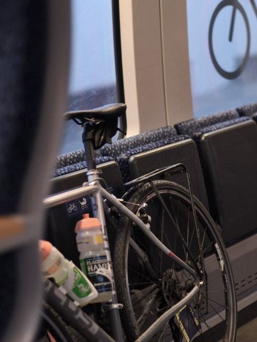
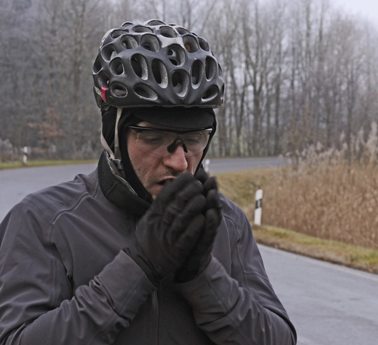
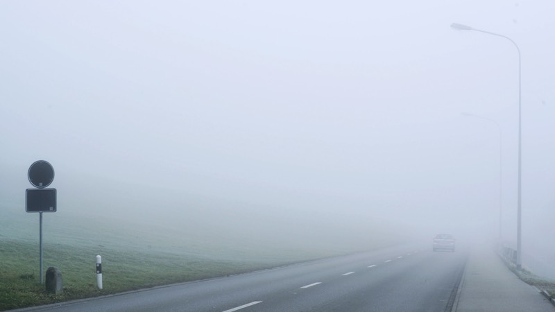
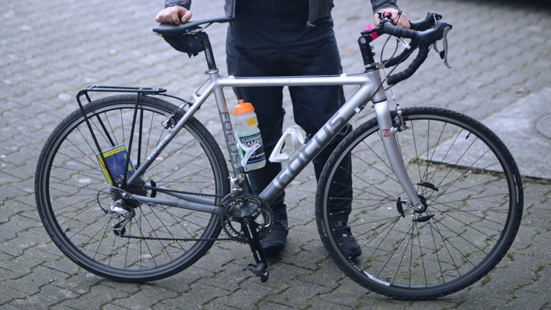

31. Dec
St. Gallen
Lindau
Distance
52,8 km
Alitude
158 m
Calories
479 kcal
In Germany for New Year`s Eve they wish you “a good slide”. That´s exactly what I had.
 
I felt like I was in the final 100 meters at the end of a great marathon. So little to finish but there is still work to be done. Since in Germany for New Year`s Eve everbody whishes you “a good slide”, I decide to take a train to St. Gallen in Switzerland with the aim to really enjoy these last kilometres from my trip rather than only suffering.
The 31.12. dawned extremely icy with temperatures of -6 degrees but in spite of the low temperatures I was well prepared. Except for my hands, that always make mi suffer in winter.
I arrived with the train to St. Gallen at about 9:30, starting my journey back to Lindau in Germany, without giving me the time to get to know the city, since I had to arrive home early to prepare for the New Year`s Eve dinner.
Leaving the city and taking route 7 I got immediately into a thick fog, avoiding to see the Lake from the mountains.
The road that descends from 700 meters to 400 meters high was abandoned at that time, except for the kiosks at the side of the road selling fireworks.
One hour after my departure I arrived again at the town of Rorschach by the lakeside, taking a short break and recovering energy not only for the rest of the way, but also for the night :).
The island of Lindau was my last relevant stop, admiring the village and the great lighthouse at the harbour. Next to the lighthouse, sits a large lion (Bayern Lion) looking towards Switzerland and Austria and protecting the city.
That´s how ended my first Rapha Festive 500 with a great experience for me as a cyclist.
There are other tracks that I’ve done between Christmas and New Year, but these were the most relevant that I would like to share. You can see the details of my track in my Strava profile. At the end of this site are the links in case you want to follow me or contact me if you have any doubts about the track.
Thanks a lot to… First to my wife, lending me her bicycle for this athletic action, but above all letting me spend these days with my personal projects, when in fact all she wanted was to be with me.
Also a special thank to Mauricio Palma for his friendship and generosity in helping me in programming and technical support. To Felix Lehmann also a lot of thanks for preparing the design for the web and dedicating his free time in my project.